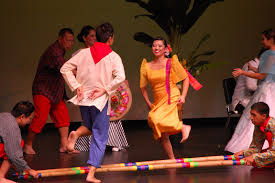
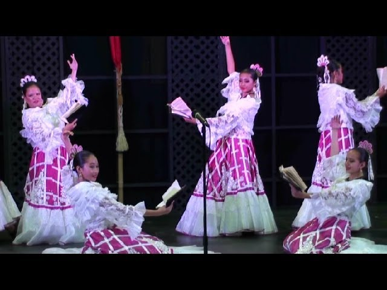

About Filipino Traditional Dance
I am a part of the Filipino student organization, Barkada. Every semester, we perform Filipino traditional dance. Some dances we are performing this year are Tinikling, Sohten Thalak, Jovencita, and Ballroom Dance.
Tinikling is a Filipino traditional dance where two dancers clap sticks and another two dancers jump according to the rhythm. It is based off of birds hopping on branches. There is a lot of different steps that could be done during Tinikling.

This dance is performed with energetic movements, symbolizing strength, bravery, and festivity. It is often accompanied by rhythmic music, showcasing the vigor and resilience of Subanon warriors or leaders.
This is a traditional Filipino folk dance that reflects Spanish influences, much like the Jota dances. The name "Jovencita" means "young lady" in Spanish, suggesting that the dance is lively, graceful, and often performed by young women in elegant attire. It is characterized by intricate footwork, hand gestures, and castanet-like clapping movements, embodying Filipino-Spanish cultural fusion.